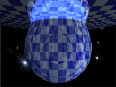

SILLY is not a general purpose language. The goal of a SILLY script is to create objects in order to compose a scene. These objects belong to classes declared in the XSight RT Engine and registered for their use with SILLY. SILLY doesn't allow you to declare new classes.
Let's suppose you want to create a metal sphere in SILLY:
// SILLY script sphere([0, 0, 0], 1, metal(red, 0.1, 1.0))
In this context, sphere makes reference to the C# class Sphere, declared by the XSight RT Engine. The expression above is interpreted as a constructor call, which could be translated to this C# expression:
// C# equivalent.
new Sphere(new Vector(0,0,0), 1.0,
new Metal(Colors.Red, 0.1, 1.0))
You can use a SILLY expression as the one shown before in any context where SILLY would expect a Sphere or, more probably, a IShape, where IShape is an interface type also declared by the XSight RT Engine:
// SILLY script
difference(
box([-1,-1,-1], [1,1,1], metal(red, 0.1, 1.0)),
sphere([0, 0, 0], 1, metal(red, 0.1, 1.0)))
Difference, again, is another XSight RT Engine class, and we are executing one of its constructors:
// C#
public class Difference: ...
{
public Difference(IShape shape1, IShape shape2);
// ...
}
In fewer words, SILLY scripts creates objects from predefined classes, by executing constructors from these classes. Most constructors requires several parameters. Values passed as parameters can be other objects, or values from a short list of basic types.
SILLY works with the following basic types:
Character strings are seldom used. Currently, there's only one class that needs a string parameter: BitmapBackground, which sets a bitmap file as the scene background:
background
BitmapBackground('c:\night_sky.png');
However, you could develop and register extension classes and use string parameters in their constructors.
Vectors are used in SILLY to represent both points and directions. You can declare a vector value using brackets:
[3, 4 * 2, 5.1]
There are several predefined vector constants:
There's a special syntax for declaring multiples of an axis:
5^X // [5, 0, 0] 18 ^Z // [0, 0, 18]
In these two cases, a numeric constant precedes an axis constant. You may include whitespace between the numeric constant and the axis, as shown in the second expression. Please note that this syntax is different from explicitly multiplying a vector with a scalar value:
5^X // Special syntax 5 * ^X // "Regular" explicit syntax, but same result as above
The special syntax only allows numerical constants as prefixes, while the regular syntax allows any other numeric expression, including a macro identifier:
set r = 10; r^X // WRONG!!! r * ^X // It's ok! [r,0,0] // Also allowed
Colors are specified this way:
rgb(1, 0.5, 0.0) // Orange, as a RGB triplet. rgb 0.8 // A shade of gray, as a brightness value. SeaGreen // A shortcut for a named color.
SeaGreen is handled as a predefined macro, which evaluates as a color value. All predefined named colors from .NET are also considered as color macros by SILLY.
If you move the mouse pointer over a predefined color macro, or an rgb expression, a patch of the corresponding color is shown in the status bar, at the left of the line number panel:
Besides this, moving the mouse pointer over a predefined color macro activates a tip showing the rgb components of the predefined color.
Home | Small Instantiation Language | Basic syntax | Expressions | Animation support | Macros